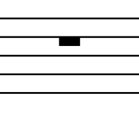
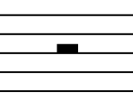
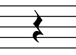
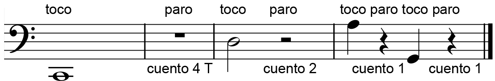

Teoría aplicada - Parte II
Silencios
Hasta el momento estuvimos hablando de la duración de los sonidos pero la música no solo se construye con sonidos, ¡también utilizamos los silencios!
Y como puede preverse, también le asignamos una duración a los silencios. En la siguientes imágenes se ven los silencios que se corresponden con los sonidos de igual duración.
El silencio de redonda dura 4 tiempos y se escribe "colgando" de la 4ta línea del pentagrama:
El de blanca dura 2 tiempos y se escibe por encima y apoyado sobre la 3er línea. No es importante poder distinguirlos visualmente, el contexto nos va a llevar a darles el valor que les corresponde:
El silencio de negra con una duración de 1 tiempo:
Pero ¿y cómo se tocan los silencios? ¡No se tocan! Se detiene el movimiento del arco por completo y se espera contando los tiempos que dure el silencio y luego se sigue tocando las notas que tengamos.
Compases
En la imagen anterior vemos que entre las notas y silencios hay unas barras verticales. El espacio que hay entre barra y barra se llama compás.
El primer compás es entre la clave de Fa y la primera barra de compás, no se dibuja una barra inicial.
El último compás está delimitado por una barra vertical, justo antes de la negra, y una doble barra final para indicar que la pieza musical termina ahí.
Las barras de compases surgieron como necesidad de organizar las notas y silencios y para hacer más fácil la lectura y mientras tocamos no perdernos entre tantas notas.
¿Cuál de los 2 pentagramas te parece que nos presentan las notas mejor organizadas y facilitan la lectura?
 Ejercicios (pronto)
Ejercicios (pronto)